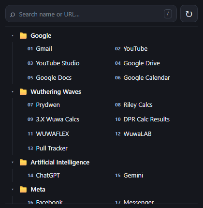

TCPDNSHTTPPCAP
NetScopepacket → insight
packet-analyzerPython
Đọc những gì
mạng đang nói.
Thu thập gói tin, phân tích PCAP, phát hiện DNS bất thường và dữ liệu nhạy cảm truyền rõ.
Xem mã nguồn~ visitor@hoangpc /portfolio $ whoami
Cyber Security & Code
Sinh viên An toàn thông tin tại PTIT. Tôi viết phần mềm, tìm hiểu mạng máy tính và xây những công cụ mình muốn sử dụng.
01 / whoami
@hoangpc0112
Hà Nội · Việt NamTôi theo học ngành An toàn thông tin tại Học viện Công nghệ Bưu chính Viễn thông (PTIT).
GitHub của tôi là nơi lưu những bài tập, ứng dụng web và thử nghiệm về mạng. Từ phân tích PCAP, chat qua BLE đến hệ thống gợi ý sách.
❯ cat profile.json
{
"name": "Phạm Chính Hoàng",
"study": "Cyber Security @ PTIT",
"location": "Hà Nội, Việt Nam",
"bio": "TLE enjoyer",
"github": "hoangpc0112"
}Gõ help để xem lệnh. Thử projects hoặc skills.
Terminal mô phỏng, có các lệnh help, whoami, projects, skills, contact và clear. Không chạy lệnh trên máy.
02 / ls projects/
Thu thập gói tin, phân tích PCAP, phát hiện DNS bất thường và dữ liệu nhạy cảm truyền rõ.
Xem mã nguồnQuản lý sách, bạn đọc và mượn trả. Gợi ý cá nhân hóa bằng k-NN và cosine similarity.
Xem mã nguồnChat Android qua Bluetooth LE. Nhắn riêng, kênh công khai và hàng đợi tin nhắn lưu trong SQLite.
Xem mã nguồn02.1 / more projects
Đặt vé theo suất chiếu, chọn ghế, xác thực OTP qua email và quản lý lịch sử đặt vé.
Xem mã nguồn
Extension trình duyệt để duyệt, tìm kiếm và quản lý bookmark qua một giao diện tập trung.
Xem mã nguồnCấu hình Arch Linux và Hyprland cho máy cá nhân, kết hợp và tùy biến từ nhiều nguồn.
Xem mã nguồn03 / cat stack.conf
C / C++ Java Python JavaScript TypeScript
React FastAPI Spring Boot HTML / CSS
PostgreSQL MySQL SQLite Linux / Git